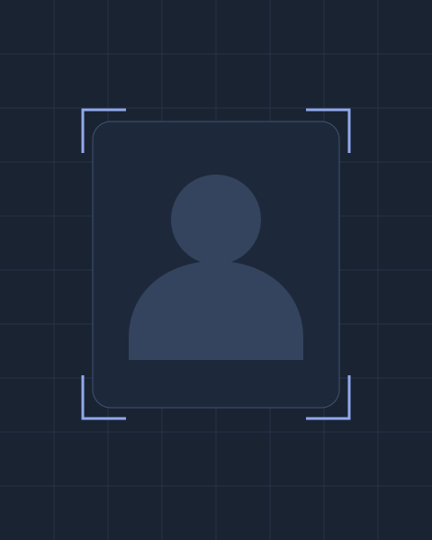

실시간 얼굴 인식 시스템
얼굴 탐지 · 특징 벡터 · 실시간 처리
얼굴 이미지 수집과 라벨링부터 YOLO·FaceNet 기반 인식, 로컬 실시간 테스트까지 연결한 비전 파이프라인.
프로젝트 상세 · 데모안녕하세요, AI 엔지니어
컴퓨터 비전부터 언어·시계열 분석까지,
문제를 이해하고 AI로 해결합니다.

전산통계 · 컴퓨터공학 / KT 에이블스쿨
01 / PROJECTS
문제 정의와 구현 과정, 핵심 기술을
프로젝트별 상세 페이지에서 확인하세요.
얼굴 탐지 · 특징 벡터 · 실시간 처리
얼굴 이미지 수집과 라벨링부터 YOLO·FaceNet 기반 인식, 로컬 실시간 테스트까지 연결한 비전 파이프라인.
프로젝트 상세 · 데모미디어 진위 분석 · Vision Transformer
영상 프레임의 얼굴 영역을 전처리하고 Vision Transformer를 적용해 조작된 미디어를 분석하는 시스템.
프로젝트 상세 · 데모Whisper 음성 인식 · OpenAI API 요약 · BERT 분류
Whisper로 음성을 텍스트로 변환하고, OpenAI API 기반 요약·정보 추출과 BERT 분류를 연결한 기록 지원 프로젝트.
프로젝트 상세 · 데모시계열 특성 분석 · 딥러닝 · 기준선 비교
과거 판매량과 외부 요인을 분석하고 1D CNN·LSTM 및 회귀 기준선을 비교한 수요 예측 프로젝트.
프로젝트 상세 · 데모02 / TOOLKIT
프로젝트에서 다룬 기술을
역할과 활용 분야에 맞춰 정리했습니다.
Python · Java · SQL
데이터 처리, 모델 구현, 기본 소프트웨어 개발PyTorch · TensorFlow/Keras
CNN · 1D CNN · LSTM · Vision Transformer(ViT)OpenCV · YOLO · FaceNet · Roboflow
face_recognition · 이미지 증강 · 얼굴 탐지·크롭 · 특징 벡터 추출BERT · OpenAI API · Whisper · Hugging Face Transformers
BERT 파인튜닝·텍스트 분류 · GPT 기반 요약·키워드 추출 · 음성 인식(STT)pandas · NumPy · scikit-learn · Matplotlib · Seaborn
EDA · 결측치·이상치 처리 · 특성 생성 · RMSE·MAE 평가Git · GitLab · Jupyter Notebook · Google Colab · VS Code
AI 서비스 기획 · 요구사항 정의 · 팀 기반 프로젝트03 / EXPERIENCE
집중 교육과 팀 프로젝트,
아이디어를 나누고 함께 성장한 경험입니다.
2024.09–2025.02
6개월 집중 AI 교육 수료. 데이터 분석·머신러닝·딥러닝 심화 학습 및 7개 팀 기반 AI 프로젝트 수행.
2024.05
생성형 AI 아이디어 경진대회 참가.
2023.12
교육 봉사팀으로 참여해 비누 만들기와 동화책 번역 등 교육 활동 수행.
2023.07
약 80시간의 영어 말하기·듣기·쓰기 집중 교육 이수.
2021.09–2022.08
고등학생 대상 수학 멘토링 및 1년간 학습 지도.
04 / ABOUT
전산통계와 컴퓨터공학을 바탕으로 컴퓨터 비전, 자연어 처리, 시계열 예측 프로젝트를 수행한 AI 엔지니어입니다. 데이터 수집·전처리부터 모델 적용, 성능 평가, 서비스 흐름 구현까지 연결하며, 문제의 맥락을 이해하고 끝까지 해결하는 개발을 지향합니다.
KT 에이블스쿨에서 데이터 분석·머신러닝·딥러닝을 집중적으로 학습하고, 팀 기반 AI 프로젝트를 통해 아이디어를 구현하는 경험을 쌓았습니다.
관심 분야는 컴퓨터 비전, 텍스트·음성 기반 AI 서비스, 그리고 시계열 예측입니다.
한국데이터산업진흥원 · 합격
Intermediate High (IH)
Amazon Web Services · 합격